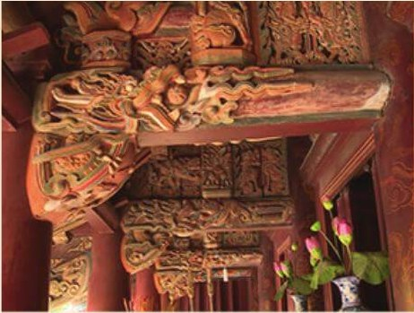
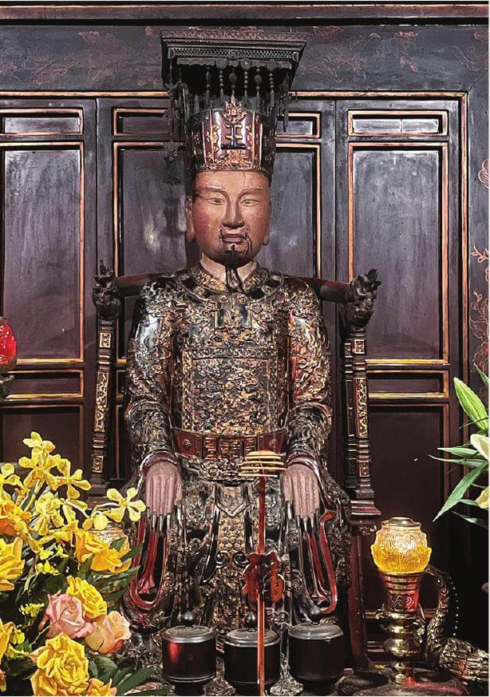
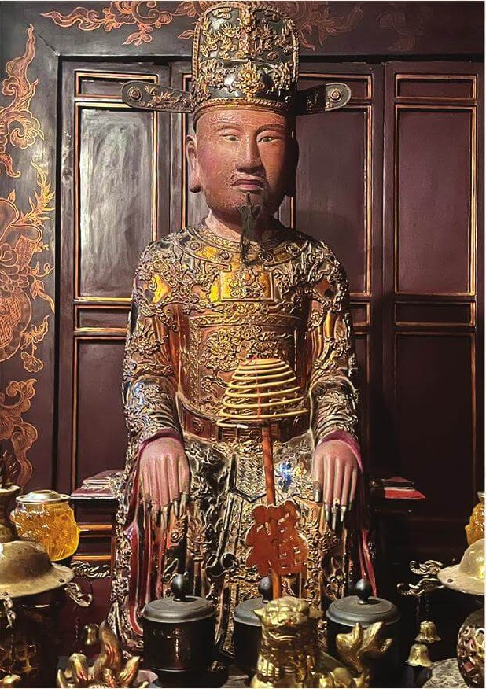

CỐ ĐÔ HOA LƯ
Giới thiệu đền vua Lê

Đền thờ Vua Lê Đại Hành được khởi dựng từ thế kỷ XVII trên chính nền móng cung điện xưa, ngôi đền mang lối kiến trúc "nội công ngoại quốc" đồng điệu với đền Vua Đinh, đồng thời lưu giữ trọn vẹn nhiều mảng điêu khắc đặc sắc của thời Hậu Lê.
Ngay tại khu vực hiên đền, quý khách sẽ được chiêm ngưỡng đỉnh cao của nghệ thuật chạm khắc gỗ thế kỷ XVII. Các mảng chồng rường nổi bật với họa tiết hoa sen, hoa cúc và hình tượng rồng cách điệu tinh xảo. Đặc biệt, sự kết hợp giữa hoa sen thanh cao với hình ảnh hổ và khóm trúc không chỉ mang triết lý nhân quả sâu sắc, mà còn ẩn chứa câu chuyện thiêng liêng về truyền thuyết sinh ra vua Lê Hoàn.
Bên cạnh đó, sáu chiếc bẩy hiên được các nghệ nhân khéo léo tạc thành sáu thân rồng vươn mình sát xà ngang, hòa cùng các chủ đề "Long Hổ hội ngộ", rồng phun lửa và ngậm ngọc để tạo nên những tác phẩm chạm lộng vô cùng sống động.


Bước sâu qua cánh cửa để vào khu vực nội điện thiết kế theo kiểu chữ Công gồm ba tòa, quý khách sẽ lần lượt cảm nhận rõ nét sự thâm nghiêm và tài hoa của tiền nhân:
Tòa Bái đường là nơi thờ Công đồng: Gây ấn tượng mạnh mẽ với đôi xà ngà voi cách điệu từ gỗ – một kỹ thuật đỉnh cao vừa đóng vai trò chịu lực đỡ mái, vừa khéo léo che kín các đầu hoành trong kiến trúc cổ truyền.
Tòa Thiêu hương: Không gian tưởng nhớ các công thần triều Tiền Lê, nổi bật với hệ thống vì ván mê được chạm khắc vô cùng tinh xảo các hoạt cảnh rồng ổ, rồng đàn, gửi gắm ước vọng về sự sinh sôi, phồn thực.
Tòa Chính cung: Nơi bài trí trang nghiêm tượng thờ Vua Lê Đại Hành, Thái hậu Dương Vân Nga và Khai Minh Vương Lê Long Đĩnh.


Vua Lê Đại Hành (tên húy là Lê Hoàn), sinh năm 941 tại Châu Ái (nay thuộc tỉnh Thanh Hóa). Cha mẹ mất sớm, viên quan sát họ Lê nhận làm con nuôi. Tuổi trưởng thành Lê Hoàn giúp cho Nam Việt Vương Đinh Liễn, con cả vua Đinh, ông tỏ rõ là người có chí lớn được Đinh Bộ Lĩnh khen là người trí dũng, giao cho cai quản quân sĩ. Khi đất nước xảy ra cuộc nội chiến 12 sứ quân, Lê Hoàn tham gia dẹp loạn, lập nhiều chiến công. Khi đất nước thống nhất, Đinh Tiên Hoàng phong cho Lê Hoàn giữ chức Thập đạo tướng quân. Năm 980, triều Đinh kết thúc, Lê Hoàn lên ngôi Hoàng đế, lập nên triều Tiền Lê, niên hiệu Thiên Phúc.
Sau khi đăng quang, vua Lê Đại Hành đã có hai chiến công hiển hách: kháng Tống bình Chiêm.
Thứ nhất là chiến công kháng Tống (năm 981): Dưới sự chỉ huy trực tiếp và tài tình của nhà vua, quân và dân ta đã thực hiện chiến lược đánh nhanh thắng nhanh, tiêu diệt toàn bộ lực lượng thủy quân của giặc tại cửa sông Bạch Đằng, bắt sống nhiều tướng địch ở Chi Lăng, buộc triều Tống phải ra lệnh rút quân.
Thứ hai là chiến dịch bình định quân Chiêm Thành (năm 982): đây là cuộc Nam phạt đầu tiên trong lịch sử dân tộc đã giành thắng lợi vang dội, khẳng định mạnh mẽ chủ quyền và uy thế của quốc gia Đại Cồ Việt.
Không chỉ là một nhà quân sự lỗi lạc, khi đất nước thanh bình, vua Lê Đại Hành còn đặc biệt quan tâm đến việc củng cố nội trị. Ngài cho đúc tiền "Thiên Phúc" để phát triển giao thương, mở mang đường xá, thủy lợi phục vụ nông nghiệp, đồng thời kiện toàn bộ hệ thống hành chính từ Lộ, Phủ đến Châu. Năm 1005, nhà vua băng hà, để lại một nền tảng quốc gia thái bình và thịnh trị. Sau đó người con trai Lê Long Đĩnh lên ngôi kế tục sự nghiệp được 4 năm, đến năm 1010, lịch sử sang trang khi nhà Lý dời đô từ Hoa Lư ra thành Thăng Long.
Đến với không gian linh thiêng này, chúng ta không thể không nhắc đến Thái hậu Dương Vân Nga – một trong những người phụ nữ bản lĩnh và tiêu biểu nhất của lịch sử thế kỷ X.
Khi vua Đinh Tiên Hoàng băng hà, ấu chúa Đinh Toàn mới 6 tuổi lên nối ngôi, giặc Tống lăm le xâm lược, đất nước rơi vào tình thế "ngàn cân treo sợi tóc". Trước vận mệnh sống còn của dân tộc, gạt bỏ mọi lợi ích riêng tư và dòng tộc, Thái hậu đã quyết định trao chiếc áo long cổn của nhà Đinh cho Thập đạo tướng quân Lê Hoàn, đưa ông lên ngôi để chèo lái con thuyền quốc gia vượt qua cơn binh lửa. Quyết định thức thời, dũng cảm và đầy tầm nhìn ấy đã tạo cơ sở pháp lý vững chắc cho chiến thắng kháng Tống, bình Chiêm vang dội.

Đền thờ Vua Lê Đại Hành hôm nay không chỉ là biểu tượng cho lòng tôn kính, biết ơn sâu sắc của hậu thế đối với các bậc tiên đế, mà còn là nhịp cầu lịch sử đưa mỗi chúng ta chạm tay vào hào khí oai hùng một thời của cha ông tại miền đất cố đô.